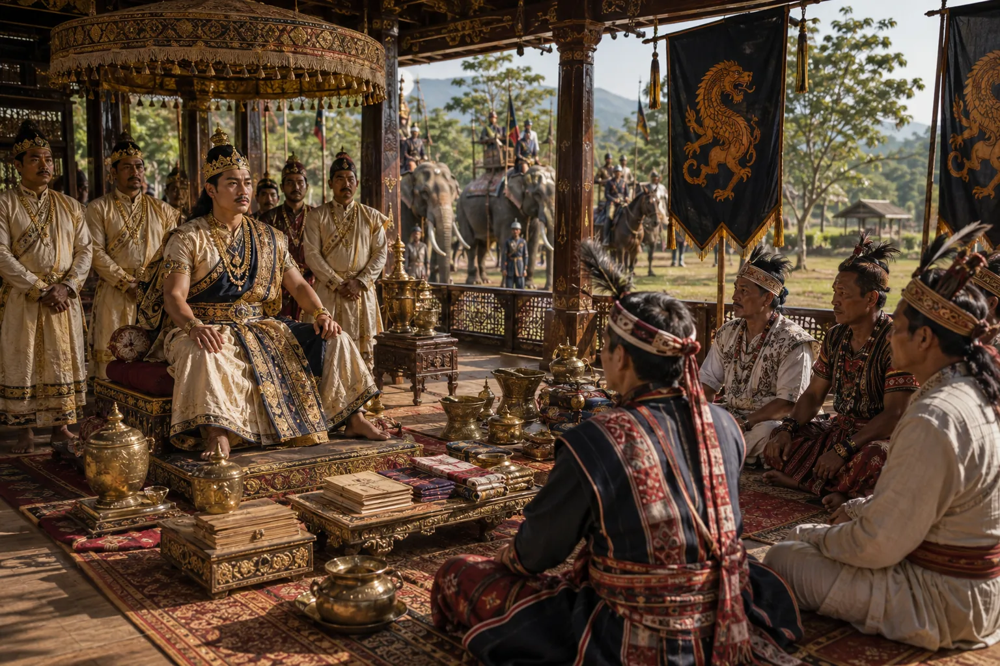

Subjugation and Vassalage of the Kachari and Jaintia Rulers
1706–1707 · The Tungkhungia kings

Following victorious campaigns, Rudra Singha receives envoys and rulers of the Kacharis and Jaintias who submit tribute and acknowledge Ahom supremacy.
Sources have not yet been catalogued for this record.
People: Ram Singh I (Jaintia), Rudra Singha (Sukhrungphaa), Tamradhwaj Narayan
Open this scene in the interactive archive · Follow this event on MAP